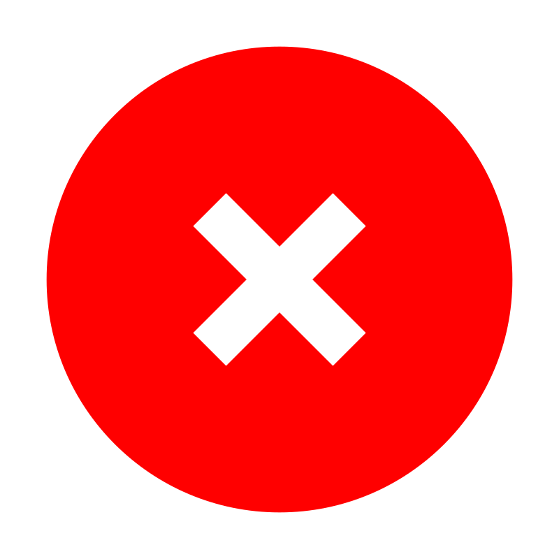

<ion-card>
  <ion-card-content>
    <div class="add-category">
      <ion-input 
        placeholder="Nueva categoría..." 
        [(ngModel)]="newCategoryName"
        type="text">
      </ion-input>
      <ion-button (click)="onAddCategory()" color="dark" fill="solid">Agregar</ion-button>
    </div>

    <ion-list>
      <ion-item button (click)="filterAll()" class="category-item">
        <ion-label>Todas</ion-label>
      </ion-item>

      <ion-item 
        *ngFor="let cat of categories" 
        class="category-item" 
        (click)="filterCategory.emit(cat.id); toggleCategory(cat)"
        button>
      
        <ng-container *ngIf="editingCategoryId !== cat.id; else editCategoryMode">
          <div class="category-content">
            <ion-label>{{cat.name}}</ion-label>
            <div class="category-buttons">
              <ion-button fill="solid" color="primary" (click)="startEditingCategory(cat); $event.stopPropagation()">
                Editar
              </ion-button>
              <ion-button fill="solid" color="danger" (click)="confirmDeleteCategory(cat); $event.stopPropagation()">
                Eliminar
              </ion-button>
            </div>
          </div>
        </ng-container>

        <ng-template #editCategoryMode>
          <div class="edit-wrapper">
            <ion-input 
              [(ngModel)]="editingCategoryName" 
              placeholder="Editar categoría..." 
              type="text">
            </ion-input>
            <div class="edit-actions">
              <ion-button fill="solid" color="success" (click)="saveEditingCategory(); $event.stopPropagation()">
                Guardar
              </ion-button>
              <ion-button fill="solid" color="medium" (click)="cancelEditingCategory(); $event.stopPropagation()">
                Cancelar
              </ion-button>
            </div>
          </div>
        </ng-template>

      </ion-item>

      <ng-container *ngFor="let cat of categories">
        <div *ngIf="expandedCategoryId === cat.id" class="category-tasks">
          <h3>Tareas en {{cat.name}}:</h3>
          <ion-list>
            <ion-item *ngFor="let task of getTasksForCategory(cat.id)">
              <ion-label>{{task.title}}</ion-label>
              
              
              
              <ng-template #notCompletedIcon>
                
              </ng-template>
            </ion-item>            
            <ion-item *ngIf="getTasksForCategory(cat.id).length === 0">
              <ion-label>Sin tareas</ion-label>
            </ion-item>
          </ion-list>
        </div>
      </ng-container>
    </ion-list>
  </ion-card-content>
</ion-card>
